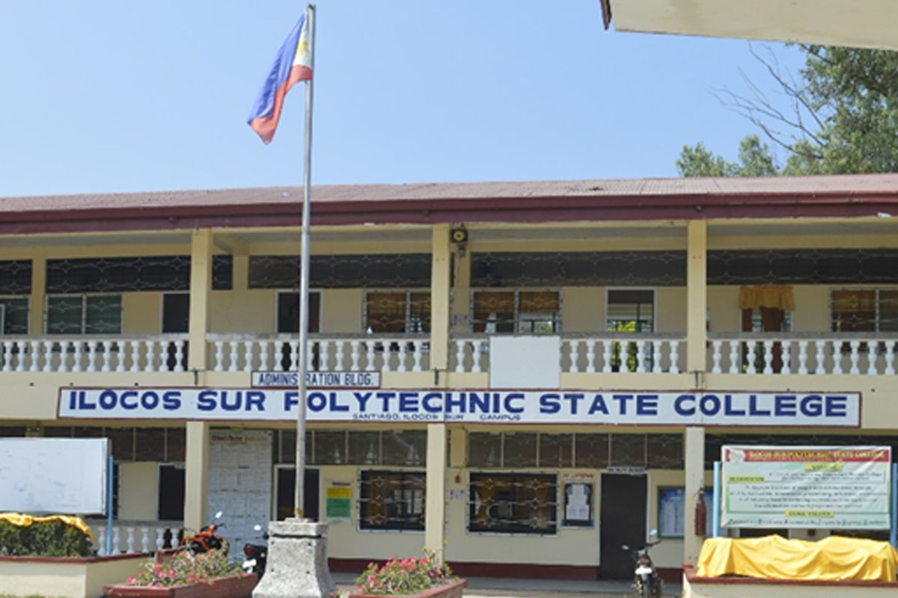
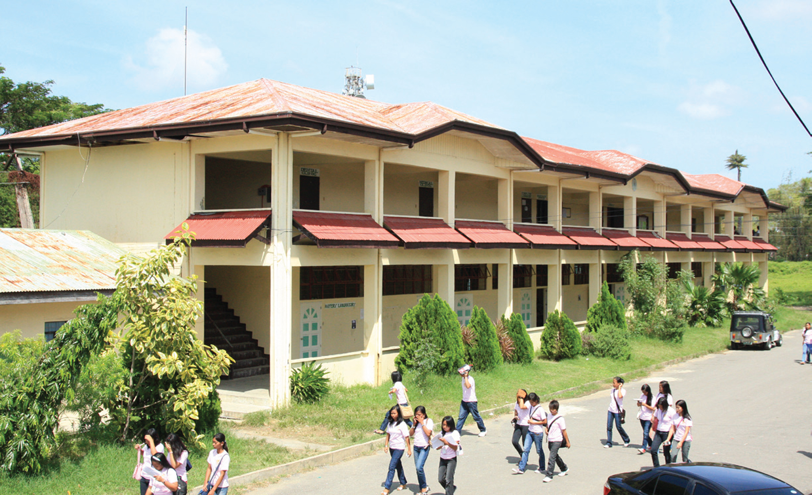
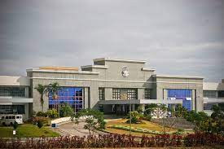
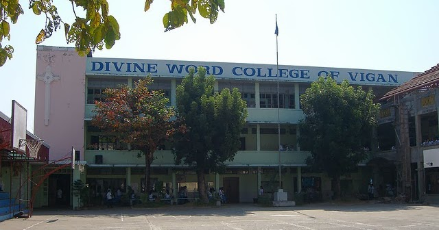
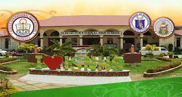
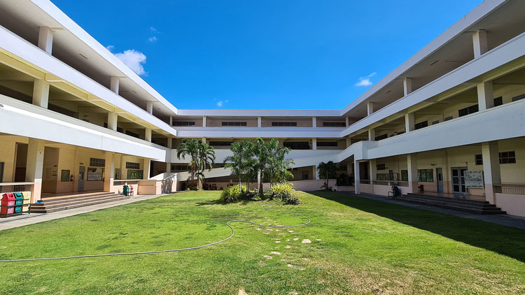
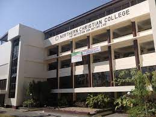
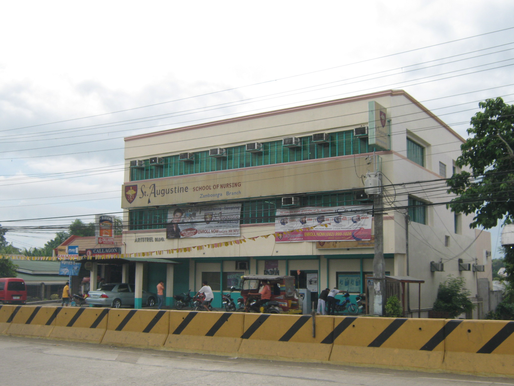

ISPSC is a state college that offers technical-vocational, undergraduate, and graduate programs in agriculture, engineering, education, and other fields.

Ilocos Sur Community College:
A community college offering affordable and accessible education to residents of Ilocos Sur, with programs in arts, sciences, and technical-vocational fields.

Colegio de San Juan de Letran - Abucay:
A private educational institution that offers K-12 and tertiary education programs.

Divine Word College of Vigan:
A private Catholic college offering programs in education, business, and liberal arts, with a focus on holistic education.

Ilocos Sur National High School:
A public high school in Vigan City that offers a comprehensive secondary education program.

St. Paul College of Ilocos Sur:
A private Catholic school offering K-12 education and various vocational courses.

Northern Christian College:
A private Christian college in Laoag City, offering programs in education, business, and theology.

St. Augustine School of Nursing - Vigan:
A private nursing school that offers Bachelor of Science in Nursing (BSN) programs.

Colegio del Buen Consejo:
A private school in Vigan City that offers K-12 education and vocational courses.